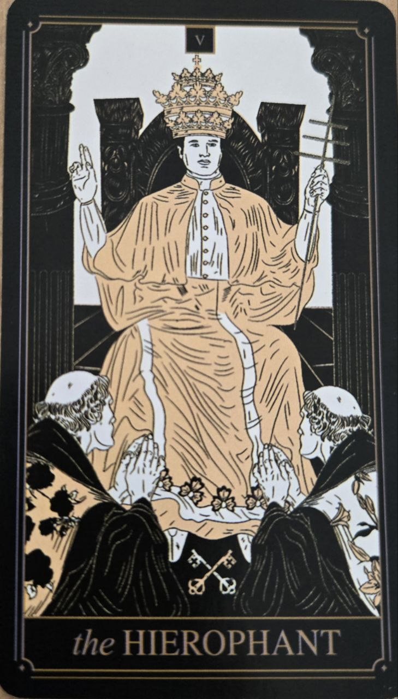

Veľkňaz (Hierofant) predstavuje tradíciu, učenie a prenášanie vedomostí. Je to karta, ktorá spája individuálnu skúsenosť s kolektívnym systémom hodnôt.
Na rozdiel od Veľkňažky, ktorá hľadá pravdu vnútri, Veľkňaz ju hľadá v overených štruktúrach a učeniach.
Táto karta symbolizuje vzdelanie, tradíciu a autoritu v oblasti viery alebo systému hodnôt. Často poukazuje na potrebu riadiť sa overenými postupmi alebo učiť sa od niekoho skúsenejšieho.
Môže tiež naznačovať formálne záväzky alebo spoločenské normy.
Na karte býva postava duchovného učiteľa alebo autority, často obklopená symbolmi tradície a učenia.
Dva stĺpy alebo dve postavy pred ním môžu predstavovať odovzdávanie poznania medzi generáciami.
Gestá požehnania alebo učenia zdôrazňujú jeho rolu sprostredkovateľa.
Veľkňaz ukazuje, že nie všetko poznanie musí byť objavené osobne — niekedy je dôležité naučiť sa dôverovať systému, ktorý už existuje.